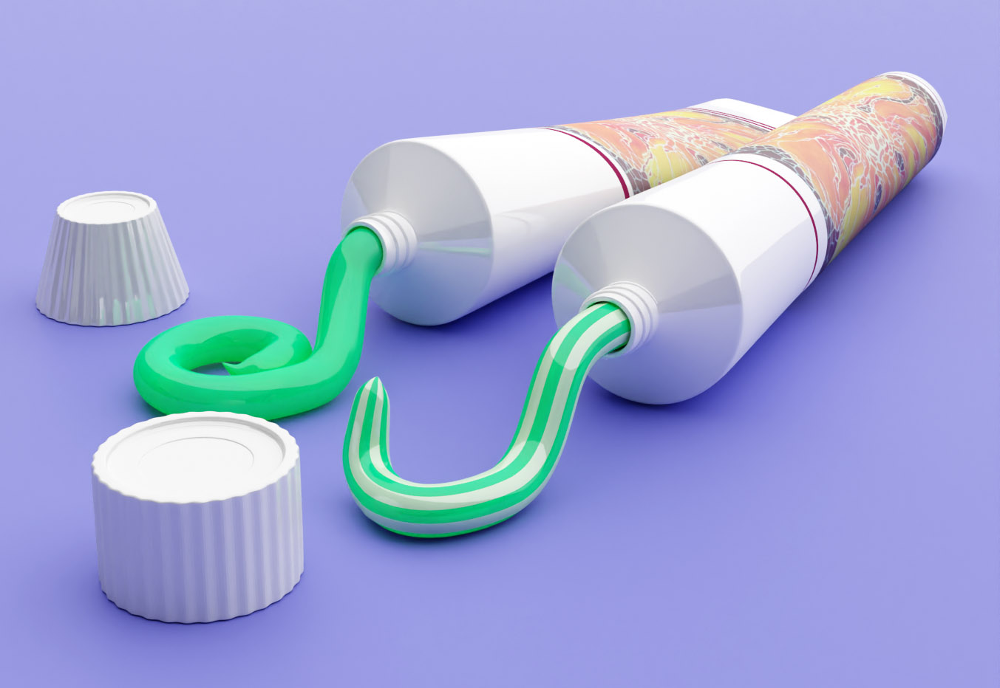
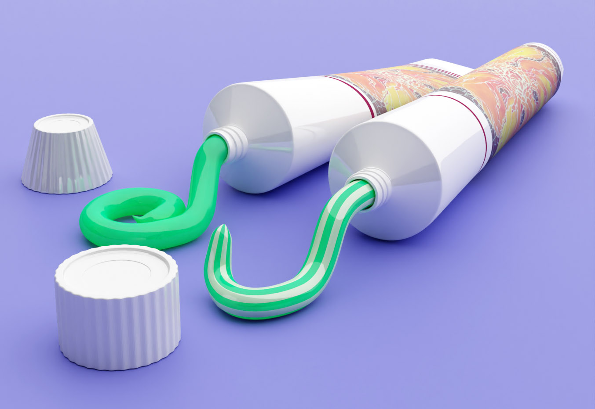

Engineer | Concepter | Hobby artist | Cat mom | Fitness enthusiasts

Hello, I'm Irena, a design and construction specialist. I live with my husband and my cat near Frankfurt am Main. I am always looking for new challenges and look forward to new and exciting tasks.
I have many years of practical experience in 2D and 3D concept development and design in the CAD systems NX and Catia. I also love art and design and work part-time as a web designer. I fulfilled a longtime dream and did further training in modeling and rendering with Blender. Blender's creative freedom allows me to put my passion for 3D modeling and design into practice.


 
